- Explain Newton’s third law of motion with respect to stress and deformation.
- Describe the restoration of force and displacement.
- Calculate the energy in Hook’s Law of deformation, and the stored energy in a string.
Newton’s first law implies that an object oscillating back and forth is experiencing forces. Without force, the object would move in a straight line at a constant speed rather than oscillate. Consider, for example, plucking a plastic ruler to the left as shown in Figure . The deformation of the ruler creates a force in the opposite direction, known as arestoring force. Once released, the restoring force causes the ruler to move back toward its stable equilibrium position, where the net force on it is zero. However, by the time the ruler gets there, it gains momentum and continues to move to the right, producing the opposite deformation. It is then forced to the left, back through equilibrium, and the process is repeated until dissipative forces dampen the motion. These forces remove mechanical energy from the system, gradually reducing the motion until the ruler comes to rest.
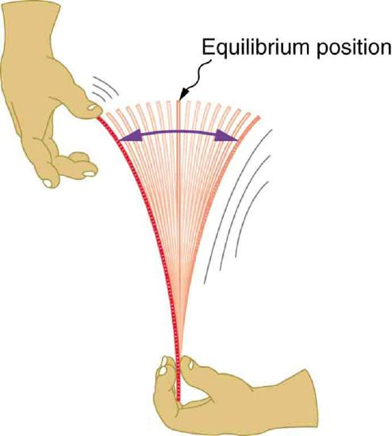
The simplest oscillations occur when the restoring force is directly proportional to displacement. When stress and strain were covered inNewton’s Third Law of Motion, the name was given to this relationship between force and displacement was Hooke’s law:
Here, \(F\) is the restoring force, \(x\) is the displacement from equilibrium ordeformation, and \(k\) is a constant related to the difficulty in deforming the system. The minus sign indicates the restoring force is in the direction opposite to the displacement.
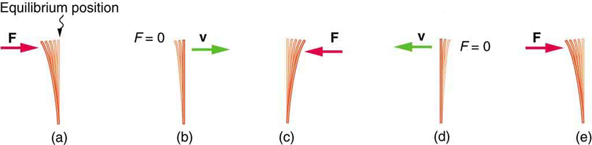
Theforce constant\(k\) is related to the rigidity (or stiffness) of a system—the larger the force constant, the greater the restoring force, and the stiffer the system. The units of \(k\) are newtons per meter (N/m). For example, \(k\) is directly related to Young’s modulus when we stretch a string. Figure shows a graph of the absolute value of the restoring force versus the displacement for a system that can be described by Hooke’s law—a simple spring in this case. The slope of the graph equals the force constant \(k\) in newtons per meter. A common physics laboratory exercise is to measure restoring forces created by springs, determine if they follow Hooke’s law, and calculate their force constants if they do.
![The given figure a is the graph of restoring force versus displacement. The displacement is given by x in meters along x axis, with scales from zero to point zero five zero, then to point one zero, then forward. The restoring force is given by F in unit newton along y axis, with scales from zero to two point zero to four point zero to forward. The graph line starts from zero and goes to upward to point where x is greater than point one zero and F is greater than four point zero with intersection dots at equal distances on the slope line. The slope is depicted by K which is given by rise along y-axis upon run along x axis . The values of mass in kilogram, weight in newtons, and displacement in meters are given along with the graph in a tabular format. In the figure b a horizontal weight bar is shown with three weight measuring springs tied to its lower part, hanging in the downward vertical direction. The first bar has no mass hanging through it, showing zero displacement, as x is equal to zero. It is the least stretched spring downward. The second spring has mass m one tied to it which exerts a force w one, on the spring, which causes displacement in the spring shown here to be x one. Similarly, the third spring is most stretched downward with a mass m two hanging through it with force w two and displacement x two. The values of mass in kg, weight in newtons and displacement in meters are given with the graph in a tabular format.](images/ch16/fig16-4-the-given-figure-a-is-the-graph-of-resto.jpg)
What is the force constant for the suspension system of a car that settles 1.20 cm when an 80.0-kg person gets in?
Consider the car to be in its equilibrium position \(x = 0\) before the person gets in. The car then settles down 1.20 cm, which means it is displaced to a position \(x = -1.20 \times 10^{-2} m\). At that point, the springs supply a restoring force \(F\) equal to the person’s weight \(w = mg = (80.0 \, kg)(9.80 \, m/s^2) = 784 \, N.\) We take this force to be \(F\) in Hooke's law. Knowing \(F\) and \(x\), we can then solve the force constant \(k\).
1. Solve Hooke’s law, \(F = -kx\), for \(k\):
2. Substitute known values and solve \(k\):
Note that \(F\) and \(x\) have opposite signs because they are in opposite directions—the restoring force is up, and the displacement is down. Also, note that the car would oscillate up and down when the person got in if it were not for damping (due to frictional forces) provided by shock absorbers. Bouncing cars are a sure sign of bad shock absorbers.
In order to produce a deformation, work must be done. That is, a force must be exerted through a distance, whether you pluck a guitar string or compress a car spring. If the only result is deformation, and no work goes into thermal, sound, or kinetic energy, then all the work is initially stored in the deformed object as some form of potential energy. The potential energy stored in a spring is \(PE_{el} = \dfrac{1}{2}kx^2\). Here, we generalize the idea to elastic potential energy for a deformation of any system that can be described by Hooke’s law. Hence,
where \(PR_{el}\) is theelastic potential energystored in any deformed system that obeys Hooke’s law and has a displacement \(x\) from equilibrium and a force constant \(k\).
It is possible to find the work done in deforming a system in order to find the energy stored. This work is performed by an applied force \(F_{app}\). The applied force is exactly opposite to the restoring force (action-reaction), and so \(F_{app} = kx\). Figure shows a graph of the applied force versus deformation \(x\) for a system that can be described by Hooke’s law. Work done on the system is force multiplied by distance, which equals the area under the curve or \(\dfrac{1}{2} kx^2\) (Method A in the figure). Another way to determine the work is to note that the force increases linearly from 0 to \(kx\), so that the average force is \((1/2)kx\), the distance moved is \(x\), and thus \(W = F_{app} d = [(1/2)kx](x) = (1/2)kx^2\) (Method B in the figure).
![The graph here represents applied force, given along y-axis, versus deformation or displacement, given along x axis. The slope is linear slanting and the slope area is covered between x axis and the slope, given by F is equal to k multiplied by x, where k is constant and x is displacement. The force applied along y-axis is given by half of k multiplied by x. Along with the graph, two methods are provided to calculate weight, W. The first method gives the solution by multiplying half of b multiplied by h, whereas in the second we can get the solution by multiplying f with x.](images/ch16/fig16-6-the-graph-here-represents-applied-force-.jpg)
We can use a toy gun’s spring mechanism to ask and answer two simple questions:
![The figure a shows an artistic impression of a tranquilizer gun, which shows the inside of it revealing the gun spring and a panel just below it, in the outside area, attached to the spring. This stage shows the gun before it is cocked, and the spring is uncompressed covering the entire inside area. The figure b shows the gun with the spring in the compressed mode. The spring has been compressed to a distance x, where x distance shows the vacant area inside the gun through which the spring has been compressed. The panel is also moving along the spring. And a bullet of mass m is shown at the front of the compressed spring. The spring here has elastic potential energy, represented by P E sub e l. The figure c is the third stage of the above two stages of the gun. The spring here is released from the compressed stage releasing the bullet in the outer forward direction with velocity V and the spring’s potential energy is converted into kinetic energy, represented here by K E.](images/ch16/fig16-7-the-figure-a-shows-an-artistic-impressio.jpg)
(a): The energy stored in the spring can be found directly from elastic potential energy equation, because \(k\) and \(x\) are given.
Entering the given values for \(k\) and \(x\) yields
Because there is no friction, the potential energy is converted entirely into kinetic energy. The expression for kinetic energy can be solved for the projectile’s speed.
3. Convert units: \(23.7 \, m/s\)
(a) and (b): This projectile speed is impressive for a tranquilizer gun (more than 80 km/h). The numbers in this problem seem reasonable. The force needed to compress the spring is small enough for an adult to manage, and the energy imparted to the dart is small enough to limit the damage it might do. Yet, the speed of the dart is great enough for it to travel an acceptable distance.
Exercise : Check your Understanding
Envision holding the end of a ruler with one hand and deforming it with the other. When you let go, you can see the oscillations of the ruler. In what way could you modify this simple experiment to increase the rigidity of the system?
You could hold the ruler at its midpoint so that the part of the ruler that oscillates is half as long as in the original experiment.
Exercise : Check your Understanding
If you apply a deforming force on an object and let it come to equilibrium, what happened to the work you did on the system?
It was stored in the object as potential energy.
📖 OpenStax College Physics, Section 16.1. openstax.org · CC BY 4.0
- Observe the vibrations of a guitar string.
- Determine the frequency of oscillations.
When you pluck a guitar string, the resulting sound has a steady tone and lasts a long time. Each successive vibration of the string takes the same time as the previous one. We defineperiodic motionto be a motion that repeats itself at regular time intervals, such as exhibited by the guitar string or by an object on a spring moving up and down. The time to complete one oscillation remains constant and is called theperiod\(T\). Its units are usually seconds, but may be any convenient unit of time. The word period refers to the time for some event whether repetitive or not; but we shall be primarily interested in periodic motion, which is by definition repetitive. A concept closely related to period is the frequency of an event.
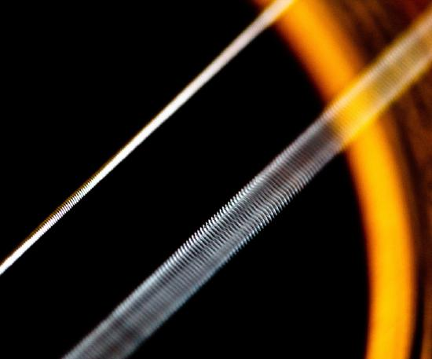
For example, if you get a paycheck twice a month, the frequency of payment is two per month and the period between checks is half a month.Frequency\(f\) is defined to be the number of events per unit time. For periodic motion, frequency is the number of oscillations per unit time. The relationship between frequency and period is
The SI unit for frequency is thecycle per second, which is defined to be ahertz(Hz):
A cycle is one complete oscillation. Note that a vibration can be a single or multiple event, whereas oscillations are usually repetitive for a significant number of cycles.
We can use the formulas presented in this module to determine both the frequency based on known oscillations and the oscillation based on a known frequency. Let’s try one example of each.
Both questions (a) and (b) can be answered using the relationship between period and frequency. In question (a), the period \(T\) is given and we are asked to find frequency \(f\). In question (b), the frequency is given and we are asked to find the period \(T\).
Substitute 0.400 \(\mu s\) for \(T\) in \(f = \dfrac{1}{T}\):
The frequency of sound found in (a) is much higher than the highest frequency that humans can hear and, therefore, is called ultrasound. Appropriate oscillations at this frequency generate ultrasound used for noninvasive medical diagnoses, such as observations of a fetus in the womb.
The time for one complete oscillation is the period \(T\): \[f = \dfrac{1}{T}.\]
The period found in (b) is the time per cycle, but this value is often quoted as simply the time in convenient units (ms or milliseconds in this case).
Exercise
Identify an event in your life (such as receiving a paycheck) that occurs regularly. Identify both the period and frequency of this event.
I visit my parents for dinner every other Sunday. The frequency of my visits is 26 per calendar year. The period is two weeks.
📖 OpenStax College Physics, Section 16.2. openstax.org · CC BY 4.0
- Describe a simple harmonic oscillator.
- Explain the link between simple harmonic motion and waves.
The oscillations of a system in which the net force can be described by Hooke’s law are of special importance, because they are very common. They are also the simplest oscillatory systems.Simple Harmonic Motion(SHM) is the name given to oscillatory motion for a system where the net force can be described by Hooke’s law, and such a system is called asimple harmonic oscillator. If the net force can be described by Hooke’s law and there is nodamping(by friction or other non-conservative forces), then a simple harmonic oscillator will oscillate with equal displacement on either side of the equilibrium position, as shown for an object on a spring in Figure . The maximum displacement from equilibrium is called theamplitude\(X\). The units for amplitude and displacement are the same, but depend on the type of oscillation. For the object on the spring, the units of amplitude and displacement are meters; whereas for sound oscillations, they have units of pressure (and other types of oscillations have yet other units). Because amplitude is the maximum displacement, it is related to the energy in the oscillation.
TAKE-HOME EXPERIMENT: SHM AND THE MARBLE
Find a bowl or basin that is shaped like a hemisphere on the inside. Place a marble inside the bowl and tilt the bowl periodically so the marble rolls from the bottom of the bowl to equally high points on the sides of the bowl. Get a feel for the force required to maintain this periodic motion. What is the restoring force and what role does the force you apply play in the simple harmonic motion (SHM) of the marble?
![The figure a shows a spring on a frictionless surface attached to a bar or wall from the left side. On the right side of the spring, an object attached to it with mass m, its amplitude is given by X, and X is equal to zero at the equilibrium level. Force F is applied to it from the right side, shown with left direction pointed red arrow and velocity v is equal to zero. A direction point showing the north and west direction is also given alongside this figure as well as with other four figures. In figure b, after the force has been applied the object moves to the left compressing the spring a bit. And the displaced area of the object from its initial point is shown in sketched dots. The F here is equal to zero and the v is max in negative direction. In figure c, the spring has been compressed to the maximum level, and the amplitude is negative X. Now the direction of force changes to the rightward direction, shown with right direction pointed red arrow and the velocity v is zero. In figure d the spring is shown released from the compressed level and the object has moved toward the right side up to the equilibrium level. The F is zero, and the velocity v is maximum. In figure e the spring has been stretched loose to the maximum level and the object has moved to the far right. Now again the velocity here is equal to zero and the direction of force again is to the left hand side, shown here as F is equal to zero.](images/ch16/fig16-9-the-figure-a-shows-a-spring-on-a-frictio.jpg)
What is so significant about simple harmonic motion? One special thing is that the period \(T\) and frequency \(f\) of a simple harmonic oscillator are independent of amplitude. The string of a guitar, for example, will oscillate with the same frequency whether plucked gently or hard. Because the period is constant, a simple harmonic oscillator can be used as a clock.
Two important factors do affect the period of a simple harmonic oscillator. The period is related to how stiff the system is. A very stiff object has a large force constant \(k\), which causes the system to have a smaller period. For example, you can adjust a diving board’s stiffness—the stiffer it is, the faster it vibrates, and the shorter its period. Period also depends on the mass of the oscillating system. The more massive the system is, the longer the period. For example, a heavy person on a diving board bounces up and down more slowly than a light one.
In fact, the mass \(m\) and the force constant \(k\) are theonlyfactors that affect the period and frequency of simple harmonic motion.
Period of Simple Harmonic Oscillator
Theperiod of a simple harmonic oscillatoris given by
and, because \(f = 1/T\), thefrequency of a simple harmonic oscillatoris
Note that neither \(T\) nor \(f\) has any dependence on amplitude.
TAKE-HOME EXPERIMENT: MASS AND RULER OSCILLATIONS
Find two identical wooden or plastic rulers. Tape one end of each ruler firmly to the edge of a table so that the length of each ruler that protrudes from the table is the same. On the free end of one ruler tape a heavy object such as a few large coins. Pluck the ends of the rulers at the same time and observe which one undergoes more cycles in a time period, and measure the period of oscillation of each of the rulers.
If the shock absorbers in a car go bad, then the car will oscillate at the least provocation, such as when going over bumps in the road and after stopping (See Figure . Calculate the frequency and period of these oscillations for such a car if the car’s mass (including its load) is 900 kg and the force constant \(k\) of the suspension system is \(6.53 \times 10^4 \, N/m\).
The frequency of the car’s oscillations will be that of a simple harmonic oscillator as given in the equation \(f = \dfrac{1}{2\pi} \sqrt{\dfrac{k}{m}}\).
The mass and the force constant are both given.
The values of \(T\) and \(f\) both seem about right for a bouncing car. You can observe these oscillations if you push down hard on the end of a car and let go.
If a time-exposure photograph of the bouncing car were taken as it drove by, the headlight would make a wavelike streak, as shown in Figure . Similarly, Figure shows an object bouncing on a spring as it leaves a wavelike "trace of its position on a moving strip of paper. Both waves are sine functions. All simple harmonic motion is intimately related to sine and cosine waves.
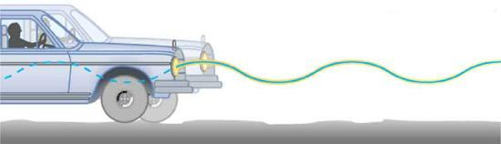
![There are two iron paper roll bars standing vertically with a paper strip stitched from one bar to the other. There is a vertical hanging spring just over the middle of the two bars, perpendicular to the strip of the paper, having an object with mass m tied to it. There is a line graph with amplitude scale as X, zero and negative X on the left side of the paper strip, vertically over each other with their points marked. A perpendicular line is drawn through this amplitude scale toward the right with a point T marked over it, showing the time duration of the amplitude. This line has an oscillating wave drawn through it.](images/ch16/fig16-11-there-are-two-iron-paper-roll-bars-stand.jpg)
The displacement as a function of time \(t\) in any simple harmonic motion—that is, one in which the net restoring force can be described by Hooke’s law, is given by
where \(X\) is amplitude. At \(T = 0\), the initial position is \(x_0 = X\), and the displacement oscillates back and forth with a period\(T\).(When \(t = T\), we get \(x = X\) again because \(cos \, 2\pi = 1\)). Furthermore, from this expression for \(x\), the velocity \(v\) as a function of time is given by:
where \(v_{max} = 2\pi X/T = X \sqrt{k/m}\). The object has zero velocity at maximum displacement—for example, \(v = 0\) when \(t = 0\), and at that time \(x = X\). The minus sign in the first equation for \(v(t)\) gives the correct direction for the velocity. Just after the start of the motion, for instance, the velocity is negative because the system is moving back toward the equilibrium point. Finally, we can get an expression for acceleration using Newton’s second law. [Then we have \(x(t), \, v(t), \, t,\) and \(a(t)\), the quantities needed for kinematics and a description of simple harmonic motion.] According to Newton’s second law, the acceleration is \(a = F/m = kx/m\). So, \(a(t)\) is also a cosine function:
Hence, \(a(t)\) is directly proportional to and in the opposite direction to \(x(t)\). Figure shows the simple harmonic motion of an object on a spring and presents graphs of \(x(t)\), \(v(t)\), and \(a(t)\) versus time.
![In the figure at the top there are ten springboards with objects of different mass values tied to them. This makes some springs highly compressed some as loosely stretched and some at equilibrium, which are shown as red spherical shaped. Alongside the figure there is a scale given for different amplitude values as x equal to positive X, zero and negative X. the upward and downward pointing arrows are shown with a few springboards. In the second figure there are three graphs. The first graph shows distance covered in form of a sine wave starting from a point x units on positive y-axis. The height of the wave above x-axis is marked as amplitude. The gap between two consecutive crests is marked as T. Below first graph there is another graph showing velocity in form of a sine wave starting from the origin downward. In the third graph below the second one, acceleration is shown in the form of sine wave starting from x units on the negative y-axis upward. In the last figure three position of a spring are shown. The first position shows the unstretched length of a spring pendulum. A hand is holding the bob of the pendulum. In the second position the equilibrium position of the spring and bob is shown. This position is lower the first one. In the third case the up and down oscillations of the spring pendulum are shown. The bob is moving x units in upward and downward directions alternatively.](images/ch16/fig16-12-in-the-figure-at-the-top-there-are-ten-s.jpg)
The most important point here is that these equations are mathematically straightforward and are valid for all simple harmonic motion. They are very useful in visualizing waves associated with simple harmonic motion, including visalizing how waves add with one another.
Exercise
Suppose you pluck a banjo string. You hear a single note that starts out loud and slowly quiets over time. Describe what happens to the sound waves in terms of period, frequency and amplitude as the sound decreases in volume.
Frequency and period remain essentially unchanged. Only amplitude decreases as volume decreases.
Exercise
A babysitter is pushing a child on a swing. At the point where the swing reaches \(x\), where would the corresponding point on a wave of this motion be located?
PHET EXPLORATIONS: MASSES AND STRINGS
A realistic mass and spring laboratory. Hang masses from springs and adjust the spring stiffness and damping. You can even slow time. Transport the lab to different planets. A chart shows the kinetic, potential, and thermal energy for each spring.
📖 OpenStax College Physics, Section 16.3. openstax.org · CC BY 4.0
- Measure acceleration due to gravity.
![In the figure, a horizontal bar is drawn. A perpendicular dotted line from the middle of the bar, depicting the equilibrium of pendulum, is drawn downward. A string of length L is tied to the bar at the equilibrium point. A circular bob of mass m is tied to the end of the string which is at a distance s from the equilibrium. The string is at an angle of theta with the equilibrium at the bar. A red arrow showing the time T of the oscillation of the mob is shown along the string line toward the bar. An arrow from the bob toward the equilibrium shows its restoring force asm g sine theta. A perpendicular arrow from the bob toward the ground depicts its mass as W equals to mg, and this arrow is at an angle theta with downward direction of string.](images/ch16/fig16-13-in-the-figure-a-horizontal-bar-is-drawn-.jpg)
Pendulums are in common usage. Some have crucial uses, such as in clocks; some are for fun, such as a child’s swing; and some are just there, such as the sinker on a fishing line. For small displacements, a pendulum is a simple harmonic oscillator. Asimple pendulumis defined to have an object that has a small mass, also known as the pendulum bob, which is suspended from a light wire or string, such as shown in Figure . Exploring the simple pendulum a bit further, we can discover the conditions under which it performs simple harmonic motion, and we can derive an interesting expression for its period.
We begin by defining the displacement to be the arc length \(s\). We see from Figure that the net force on the bob is tangent to the arc and equals \(mg \, sin \, \theta\). (The weight \(mg\) has components \(mg \, cos \, \theta\) along the string and \(mg \, sin \, \theta\) tangent to the arc.) Tension in the string exactly cancels the component \(mg \, cos \theta\) parallel to the string. This leaves anetrestoring force back toward the equilibrium position at \(\theta = 0\).
Now, if we can show that the restoring force is directly proportional to the displacement, then we have a simple harmonic oscillator. In trying to determine if we have a simple harmonic oscillator, we should note that for small angles (less than about \(15^o\)), \(sin \, \theta \approx \theta \, (sin \, \theta\) and \(\theta\) differ by about 1% or less at smaller angles). Thus, for angles less than about \(15^o\), the restoring force \(F\) is \[F \approx -mg\theta.\] The displacement \(s\) is directly proportional to \(\theta\). When \(\theta\) is expressed in radians, the arc length in a circle is related to its radius (\(L\) in this instance) by:
For small angles, then, the expression for the restoring force is:
This expression is of the form:
where the force constant is given by \(k = mg/L\) and the displacement is given by \(x = s\). For angles less than about \(15^o\) the restoring force is directly proportional to the displacement, and the simple pendulum is a simple harmonic oscillator.
Using this equation, we can find the period of a pendulum for amplitudes less than about \(15^o\). For the simple pendulum:
for the period of a simple pendulum. This result is interesting because of its simplicity. The only things that affect the period of a simple pendulum are its length and the acceleration due to gravity. The period is completely independent of other factors, such as mass. As with simple harmonic oscillators, the period \(T\) for a pendulum is nearly independent of amplitude, especially if \(\theta\) is less than about \(15^o\). Even simple pendulum clocks can be finely adjusted and accurate.
Note the dependence of \(T\) on \(g\). If the length of a pendulum is precisely known, it can actually be used to measure the acceleration due to gravity. Consider the following example.
What is the acceleration due to gravity in a region where a simple pendulum having a length 75.000 cm has a period of 1.7357 s?
We are asked to find \(g\) given the period \(T\) and the length \(L\) of a pendulum. We can solve \(T = 2\pi \sqrt{\frac{L}{g}}\) for \(g\), assuming only that the angle of deflection is less than \(15^o\).
This method for determining \(g\) can be very accurate. This is why length and period are given to five digits in this example. For the precision of the approximation \(sin \, \theta \approx \theta\) to be better than the precision of the pendulum length and period, the maximum displacement angle should be kept below about \(0.5^o\).
MAKING CAREER CONNECTIONS
Knowing \(g\) can be important in geological exploration; for example, a map of \(g\) over large geographical regions aids the study of plate tectonics and helps in the search for oil fields and large mineral deposits.
TAKE-HOME EXPERIMENT: DETERMINING \(g\)
Use a simple pendulum to determine the acceleration due to gravity \(g\) in your own locale. Cut a piece of a string or dental floss so that it is about 1 m long. Attach a small object of high density to the end of the string (for example, a metal nut or a car key). Starting at an angle of less than \(10^o\), allow the pendulum to swing and measure the pendulum’s period for 10 oscillations using a stopwatch. Calculate \(g\). How accurate is this measurement? How might it be improved?
Exercise
An engineer builds two simple pendula. Both are suspended from small wires secured to the ceiling of a room. Each pendulum hovers 2 cm above the floor. Pendulum 1 has a bob with a mass of \(10 \, kg\). Pendulum 2 has a bob with a mass of \(100 \, kg\). Describe how the motion of the pendula will differ if the bobs are both displaced by \(12^o\).
The movement of the pendula will not differ at all because the mass of the bob has no effect on the motion of a simple pendulum. The pendula are only affected by the period (which is related to the pendulum’s length) and by the acceleration due to gravity.
PHET EXPLORATIONS: PENDELUM LAB
Play with one or two pendulums and discover how the period of a simple pendulum depends on the length of the string, the mass of the pendulum bob, and the amplitude of the swing. It’s easy to measure the period using the photogate timer. You can vary friction and the strength of gravity. Use the pendulum to find the value of \(g\) on planet X. Notice the anharmonic behavior at large amplitude.

📖 OpenStax College Physics, Section 16.4. openstax.org · CC BY 4.0
- Determine the maximum speed of an oscillating system.
To study the energy of a simple harmonic oscillator, we first consider all the forms of energy it can have. We know fromHooke’s Law: Stress and Strain Revisitedthat the energy stored in the deformation of a simple harmonic oscillator is a form of potential energy given by:
Because a simple harmonic oscillator has no dissipative forces, the other important form of energy is kinetic energy \(KE\). Conservation of energy for these two forms is:
This statement of conservation of energy is valid forallsimple harmonic oscillators, including ones where the gravitational force plays a role.
Namely, for a simple pendulum we replace the velocity with \(v = L\omega\), the spring constant with \(k = mg/L\) and the displacement term with \(x = L\theta\). Thus
In the case of undamped simple harmonic motion, the energy oscillates back and forth between kinetic and potential, going completely from one to the other as the system oscillates. So for the simple example of an object on a frictionless surface attached to a spring, as shown again in Figure , the motion starts with all of the energy stored in the spring. As the object starts to move, the elastic potential energy is converted to kinetic energy, becoming entirely kinetic energy at the equilibrium position. It is then converted back into elastic potential energy by the spring, the velocity becomes zero when the kinetic energy is completely converted, and so on. This concept provides extra insight here and in later applications of simple harmonic motion, such as alternating current circuits.
![Figure a shows a spring on a frictionless surface attached to a bar or wall from the left side, and on the right side of it there’s an object attached to it with mass m, its amplitude is given by X, and x equal to zero at the equilibrium level. Force F is applied to it from the right side, shown with left direction pointed red arrow and velocity v is equal to zero. A direction point showing the north and west direction is also given alongside this figure as well as with other four figures. The energy given here for the object is given according to the velocity. In figure b, after the force has been applied, the object moves to the left compressing the spring a bit, and the displaced area of the object from its initial point is shown in sketched dots. F is equal to zero and the V is max in negative direction. The energy given here for the object is given according to the velocity. In figure c, the spring has been compressed to the maximum level, and the amplitude is negative x. Now the direction of force changes to the rightward direction, shown with right direction pointed red arrow and the velocity v zero. The energy given here for the object is given according to the velocity. In figure d, the spring is shown released from the compressed level and the object has moved toward the right side up to the equilibrium level. F is zero, and the velocity v is maximum. The energy given here for the object is given according to the velocity. In figure e, the spring has been stretched loose to the maximum level and the object has moved to the far right. Now again the velocity here is equal to zero and the direction of force again is to the left hand side, shown here as F is equal to zero. The energy given here for the object is given according to the velocity.](images/ch16/fig16-15-figure-a-shows-a-spring-on-a-frictionles.jpg)
The conservation of energy principle can be used to derive an expression for velocity \(v\). If we start our simple harmonic motion with zero velocity and maximum displacement (\(x = X\)), then the total energy is
This total energy is constant and is shifted back and forth between kinetic energy and potential energy, at most times being shared by each. The conservation of energy for this system in equation form is thus:
Solving this equation for \(v\) yields:
Manipulating this expression algebraically gives:
From this expression, we see that the velocity is a maximum (\(v_{max}\)) at \(x = 0\), as stated earlier in \(v(t) = - v_{max} \, sin \, \frac{2\pi t}{T}\). Notice that the maximum velocity depends on three factors. Maximum velocity is directly proportional to amplitude. As you might guess, the greater the maximum displacement the greater the maximum velocity. Maximum velocity is also greater for stiffer systems, because they exert greater force for the same displacement. This observation is seen in the expression for \(v_{max}\) it is proportional to the square root of the force constant \(k\) Finally, the maximum velocity is smaller for objects that have larger masses, because the maximum velocity is inversely proportional to the square root of \(m\). For a given force, objects that have large masses accelerate more slowly.
A similar calculation for the simple pendulum produces a similar result, namely:
Suppose that a car is 900 kg and has a suspension system that has a force constant \(k = 6.53 \times 10^4 \, N/m\). The car hits a bump and bounces with an amplitude of 0.100 m. What is its maximum vertical velocity if you assume no damping occurs?
We can use the expression for \(v_{max}\) given in \(v_{max} = \sqrt{\frac{k}{m}}X\) to determine the maximum vertical velocity. The variables \(m\) and \(k\) are given in the problem statement, and the maximum displacement \(X\) is 0.100 m.
This answer seems reasonable for a bouncing car. There are other ways to use conservation of energy to find \(v_{max}\). We could use it directly, as was done in the example featured inHooke’s Law: Stress and Strain Revisited.
The small vertical displacement \(y\) of an oscillating simple pendulum, starting from its equilibrium position, is given as
where \(a\) is the amplitude, \(\omega\) is the angular velocity and \(t\) is the time taken. Substituting \(\omega = \frac{2\pi}{T},\) we have
Thus, the displacement of pendulum is a function of time as shown above.
Also the velocity of the pendulum is given by
so the motion of the pendulum is a function of time.
Exercise
Why does it hurt more if your hand is snapped with a ruler than with a loose spring, even if the displacement of each system is equal?
The ruler is a stiffer system, which carries greater force for the same amount of displacement. The ruler snaps your hand with greater force, which hurts more.
Exercise :Check Your Understanding
You are observing a simple harmonic oscillator. Identify one way you could decrease the maximum velocity of the system.
You could increase the mass of the object that is oscillating.
📖 OpenStax College Physics, Section 16.5. openstax.org · CC BY 4.0
- Compare simple harmonic motion with uniform circular motion.
There is an easy way to produce simple harmonic motion by using uniform circular motion. Figure shows one way of using this method. A ball is attached to a uniformly rotating vertical turntable, and its shadow is projected on the floor as shown. The shadow undergoes simple harmonic motion. Hooke’s law usually describes uniform circular motions (\(\omega\) constant) rather than systems that have large visible displacements. So observing the projection of uniform circular motion, as in Figure , is often easier than observing a precise large-scale simple harmonic oscillator. If studied in sufficient depth, simple harmonic motion produced in this manner can give considerable insight into many aspects of oscillations and waves and is very useful mathematically. In our brief treatment, we shall indicate some of the major features of this relationship and how they might be useful.
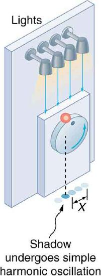
Figure shows the basic relationship between uniform circular motion and simple harmonic motion. The point P travels around the circle at constant angular velocity \(\omega\). The point P is analogous to an object on the merry-go-round. The projection of the position of P onto a fixed axis undergoes simple harmonic motion and is analogous to the shadow of the object. At the time shown in the figure, the projection has position \(x\) and moves to the left with velocity \(v\). The velocity of the point P around the circle equals \(\bar{v}_{max}\). The projection of \(\bar{v}_{max}\) on the \(x\)-axis is the velocity \(v\) of the simple harmonic motion along the \(x\)-axis.
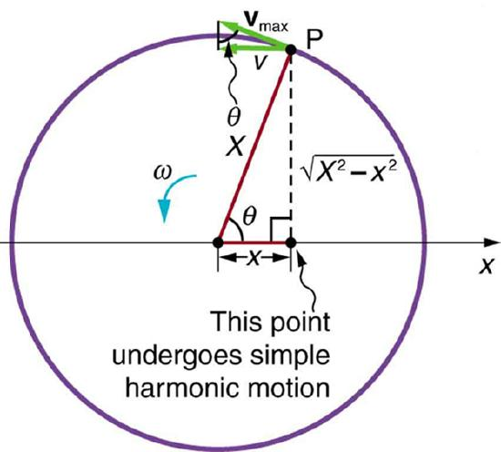
To see that the projection undergoes simple harmonic motion, note that its position \(x\) is given by:
is the constant angular velocity, and \(X\) is the radius of the circular path. Thus,
The angular velocity \(\omega\) is in radians per unit time; in this case \(2 \pi\) radians is the time for one revolution \(T\). That is, \(\omega = 2\pi/T\). Substituting this expression for \(\omega\), we see that the position \(x\) is given by:
This expression is the same one we had for the position of a simple harmonic oscillator inSimple Harmonic Motion: A Special Periodic Motion. If we make a graph of position versus time as in Figure we see again the wavelike character (typical of simple harmonic motion) of the projection of uniform circular motion onto the \(x\)-axis.
![The given figure shows a vertical turntable with four floor projecting light bulbs at the top. A smaller sized rectangular bar is attached to this turntable at the bottom half, with a circular knob attached to it. A red colored small ball is rolling along the boundary of this knob in angular direction. The turnaround table is put upon a roller paper sheet, on which the simple harmonic motion is measured, which is shown here in oscillating waves on the paper sheet in front of the table. A graph of amplitude versus time is also given alongside the figure.](images/ch16/fig16-19-the-given-figure-shows-a-vertical-turnta.jpg)
Now let us use Figure to do some further analysis of uniform circular motion as it relates to simple harmonic motion. The triangle formed by the velocities in the figure and the triangle formed by the displacements (\(X\), \(x\), and \(\sqrt{X^{2} - x^{2}}\)) are similar right triangles. Taking ratios of similar sides, we see that
We can solve this equation for the speed \(v\) or
This expression for the speed of a simple harmonic oscillator is exactly the same as the equation obtained from conservation of energy considerations in Energy and the Simple Harmonic Oscillator. You can begin to see that it is possible to get all of the characteristics of simple harmonic motion from an analysis of the projection of uniform circular motion.
Finally, let us consider the period \(T\) of the motion of the projection. This period is the time it takes the point P to complete one revolution. That time is the circumference of the circle \(2 \pi X\) divided by the velocity around the circle, \(v_{max}\). Thus, the period \(T\) is
We know from conservation of energy considerations that
Solving this equation for \(X/v_{max}\) gives
Substituting this expression into the equation for \(T\) yields
Thus, the period of the motion is the same as for a simple harmonic oscillator. We have determined the period for any simple harmonic oscillator using the relationship between uniform circular motion and simple harmonic motion.
Some modules occasionally refer to the connection between uniform circular motion and simple harmonic motion. Moreover, if you carry your study of physics and its applications to greater depths, you will find this relationship useful. It can, for example, help to analyze how waves add when they are superimposed.
Exercise
Identify an object that undergoes uniform circular motion. Describe how you could trace the simple harmonic motion of this object as a wave.
A record player undergoes uniform circular motion. You could attach dowel rod to one point on the outside edge of the turntable and attach a pen to the other end of the dowel. As the record player turns, the pen will move. You can drag a long piece of paper under the pen, capturing its motion as a wave.
📖 OpenStax College Physics, Section 16.6. openstax.org · CC BY 4.0
- Compare and discuss underdamped and overdamped oscillating systems.
- Explain critically damped system.
A guitar string stops oscillating a few seconds after being plucked. To keep a child happy on a swing, you must keep pushing. Although we can often make friction and other non-conservative forces negligibly small, completely undamped motion is rare. In fact, we may even want to damp oscillations, such as with car shock absorbers.
For a system that has a small amount of damping, the period and frequency are nearly the same as for simple harmonic motion, but the amplitude gradually decreases as shown in Figure . This occurs because the non-conservative damping force removes energy from the system, usually in the form of thermal energy. In general, energy removal by non-conservative forces is described as \[W_{nc} = \Delta (KE + PE),\] where \(W_{nc}\) is work done by a non-conservative force (here the damping force). For a damped harmonic oscillator, \(W_{nc}\) is negative because it removes mechanical energy (KE + PE) from the system.
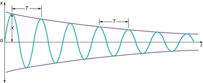
If you graduallyincreasethe amount of damping in a system, the period and frequency begin to be affected, because damping opposes and hence slows the back and forth motion. (The net force is smaller in both directions.) If there is very large damping, the system does not even oscillate—it slowly moves toward equilibrium. Figure hows the displacement of a harmonic oscillator for different amounts of damping. When we want to damp out oscillations, such as in the suspension of a car, we may want the system to return to equilibrium as quickly as possibleCritical dampingis defined as the condition in which the damping of an oscillator results in it returning as quickly as possible to its equilibrium position The critically damped system may overshoot the equilibrium position, but if it does, it will do so only once. Critical damping is represented by Curve A in Figure . With less-than critical damping, the system will return to equilibrium faster but will overshoot and cross over one or more times. Such a system isunderdamped; its displacement is represented by the curve in Figure . Curve B in Figure represents anoverdampedsystem. As with critical damping, it too may overshoot the equilibrium position, but will reach equilibrium over a longer period of time.
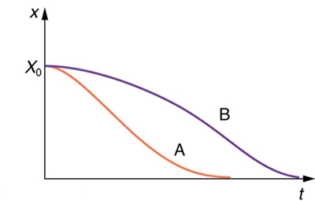
Critical damping is often desired, because such a system returns to equilibrium rapidly and remains at equilibrium as well. In addition, a constant force applied to a critically damped system moves the system to a new equilibrium position in the shortest time possible without overshooting or oscillating about the new position. For example, when you stand on bathroom scales that have a needle gauge, the needle moves to its equilibrium position without oscillating. It would be quite inconvenient if the needle oscillated about the new equilibrium position for a long time before settling. Damping forces can vary greatly in character. Friction, for example, is sometimes independent of velocity (as assumed in most places in this text). But many damping forces depend on velocity—sometimes in complex ways, sometimes simply being proportional to velocity.
Damping oscillatory motion is important in many systems, and the ability to control the damping is even more so. This is generally attained using non-conservative forces such as the friction between surfaces, and viscosity for objects moving through fluids. The following example considers friction. Suppose a 0.200-kg object is connected to a spring as shown in Figure , but there is simple friction between the object and the surface, and the coefficient of friction \(\mu_k\) is equal to 0.0800. (a) What is the frictional force between the surfaces? (b) What total distance does the object travel if it is released 0.100 m from equilibrium, starting at \(v = 0\)? The force constant of the spring is \(k = 50.0 \, N/m\).
![The given figure (a) shows a spring on a frictionless surface attached to a bar or wall from the left side and on the right side of the spring, there is an object attached with mass m. Its amplitude is given by X, and X is equal to zero at the equilibrium level. Force F is applied to it from the right side, represented by a red arrow pointing toward the left and velocity v is equal to zero. An arrow showing the direction of force is also given alongside this figure as well as with the other four figures. The energy of the object is half k x squared. In the given figure (b), after force is applied, the object moves to the left, compressing the spring slightly. The displacement of the object from its initial position is indicated by dots. The force F, here is equal to zero and velocity v, is maximum in the negative direction or the left. The energy of the object in this case is half m times negative v-max whole squared. In the given figure (c), the spring has been compressed the maximum limit, and the amplitude is minus X. Now the force is toward the right, indicated here with a red arrow pointing to the right and the velocity, v, is zero. The energy of the object now is half k times negative x whole squared. In the given figure (d), the spring is shown released from its compressed position and the object has moved toward the right side to reach the equilibrium level. Here, F is equal to zero, and the velocity, v, is the maximum. The energy of the object becomes half k times v max squared. In the given figure (e), the spring has been stretched loose to the maximum possible limit and the object has moved to the far right. Now the velocity v, here is equal to zero and the direction of force is toward the left. As shown here, F is equal to zero. The energy of the object in this case is half k times x squared.](images/ch16/fig16-23-the-given-figure-a-shows-a-spring-on-a-f.jpg)
This problem requires you to integrate your knowledge of various concepts regarding waves, oscillations, and damping. To solve an integrated concept problem, you must first identify the physical principles involved. Part (a) is about the frictional force. This is a topic involving the application of Newton’s Laws. Part (b) requires an understanding of work and conservation of energy, as well as some understanding of horizontal oscillatory systems.
Now that we have identified the principles we must apply in order to solve the problems, we need to identify the knowns and unknowns for each part of the question, as well as the quantity that is constant in Part (a) and Part (b) of the question.
The force here is small because the system and the coefficients are small.
This is the total distance traveled back and forth across \(x = 0\), which is the undamped equilibrium position. The number of oscillations about the equilibrium position will be more than \(d/X = (1.59 \, m)(0.100 \, m) = 15.9\) because the amplitude of the oscillations is decreasing with time. At the end of the motion, this system will not return to \(x = 0\) for this type of damping force, because static friction will exceed the restoring force. This system is underdamped. In contrast, an overdamped system with a simple constant damping force would not cross the equilibrium position \(x = 0\) a single time. For example, if this system had a damping force 20 times greater, it would only move 0.0484 m toward the equilibrium position from its original 0.100-m position.
This worked example illustrates how to apply problem-solving strategies to situations that integrate the different concepts you have learned. The first step is to identify the physical principles involved in the problem. The second step is to solve for the unknowns using familiar problem-solving strategies. These are found throughout the text, and many worked examples show how to use them for single topics. In this integrated concepts example, you can see how to apply them across several topics. You will find these techniques useful in applications of physics outside a physics course, such as in your profession, in other science disciplines, and in everyday life.
Exercise :Check Your Understanding
Why are completely undamped harmonic oscillators so rare?
Friction often comes into play whenever an object is moving. Friction causes damping in a harmonic oscillator.
Exercise :Check Your Understanding
Describe the difference between overdamping, underdamping, and critical damping.
An overdamped system moves slowly toward equilibrium. An underdamped system moves quickly to equilibrium, but will oscillate about the equilibrium point as it does so. A critically damped system moves as quickly as possible toward equilibrium without oscillating about the equilibrium.
📖 OpenStax College Physics, Section 16.7. openstax.org · CC BY 4.0
- Observe resonance of a paddle ball on a string.
- Observe amplitude of a damped harmonic oscillator.
Sit in front of a piano sometime and sing a loud brief note at it with the dampers off its strings. It will sing the same note back at you—the strings, having the same frequencies as your voice, are resonating in response to the forces from the sound waves that you sent to them. Your voice and a piano’s strings is a good example of the fact that objects—in this case, piano strings—can be forced to oscillate but oscillate best at their natural frequency. In this section, we shall briefly explore applying aperiodic driving forceacting on a simple harmonic oscillator. The driving force puts energy into the system at a certain frequency, not necessarily the same as the natural frequency of the system. Thenatural frequencyis the frequency at which a system would oscillate if there were no driving and no damping force.
Most of us have played with toys involving an object supported on an elastic band, something like the paddle ball suspended from a finger in Figure . Imagine the finger in the figure is your finger. At first you hold your finger steady, and the ball bounces up and down with a small amount of damping. If you move your finger up and down slowly, the ball will follow along without bouncing much on its own. As you increase the frequency at which you move your finger up and down, the ball will respond by oscillating with increasing amplitude. When you drive the ball at its natural frequency, the ball’s oscillations increase in amplitude with each oscillation for as long as you drive it. The phenomenon of driving a system with a frequency equal to its natural frequency is calledresonance. A system being driven at its natural frequency is said toresonate. As the driving frequency gets progressively higher than the resonant or natural frequency, the amplitude of the oscillations becomes smaller, until the oscillations nearly disappear and your finger simply moves up and down with little effect on the ball.
![The given figure shows three pictures of a horizontal viewed single finger containing a string, suspended downward vertically, being tied to a paddle ball at its downward end. In the first figure the ball is stretching up and down very slowly having less displacement, the displacement shown in the figures as faded shades of the ball and is depicted as 2X. Whereas in the second figure the movement of the ball is highest, while in the third the movement is least. In all the three figures the ball is at its equilibrium with respect to its movement. The frequency, f, for the first figure is very low, for the second figure as f not, while for the third figure it is highest.](images/ch16/fig16-25-the-given-figure-shows-three-pictures-of.jpg)
Figure shows a graph of the amplitude of a damped harmonic oscillator as a function of the frequency of the periodic force driving it. There are three curves on the graph, each representing a different amount of damping. All three curves peak at the point where the frequency of the driving force equals the natural frequency of the harmonic oscillator. The highest peak, or greatest response, is for the least amount of damping, because less energy is removed by the damping force.
![The given graph is of amplitude, X, along y axis versus driving frequency f, along x axis. There are three points on the x axis as f not divided by two, f not, three multiply f not divided by two. There are three curves along the x axis, in a one crest oscillation way, which are one over each other in correspondence. The curves start at a point just over the origin point and ends up at a same level along the x axis on the far right. The crests of the three curves are exactly over the f not point. The uppermost crest shows the small damping, whereas the middle one shows the medium damping, and the last one below shows the heavy damping.](images/ch16/fig16-26-the-given-graph-is-of-amplitude-x-along-.jpg)
It is interesting that the widths of the resonance curves shown in Figure depend on damping: the less the damping, the narrower the resonance. The message is that if you want a driven oscillator to resonate at a very specific frequency, you need as little damping as possible. Little damping is the case for piano strings and many other musical instruments. Conversely, if you want small-amplitude oscillations, such as in a car’s suspension system, then you want heavy damping. Heavy damping reduces the amplitude, but the tradeoff is that the system responds at more frequencies.
These features of driven harmonic oscillators apply to a huge variety of systems. When you tune a radio, for example, you are adjusting its resonant frequency so that it only oscillates to the desired station’s broadcast (driving) frequency. The more selective the radio is in discriminating between stations, the smaller its damping. Magnetic resonance imaging (MRI) is a widely used medical diagnostic tool in which atomic nuclei (mostly hydrogen nuclei) are made to resonate by incoming radio waves (on the order of 100 MHz). A child on a swing is driven by a parent at the swing’s natural frequency to achieve maximum amplitude. In all of these cases, the efficiency of energy transfer from the driving force into the oscillator is best at resonance. Speed bumps and gravel roads prove that even a car’s suspension system is not immune to resonance. In spite of finely engineered shock absorbers, which ordinarily convert mechanical energy to thermal energy almost as fast as it comes in, speed bumps still cause a large-amplitude oscillation. On gravel roads that are corrugated, you may have noticed that if you travel at the “wrong” speed, the bumps are very noticeable whereas at other speeds you may hardly feel the bumps at all. Figure shows a photograph of a famous example (the Tacoma Narrows Bridge) of the destructive effects of a driven harmonic oscillation. The Millennium Bridge in London was closed for a short period of time for the same reason while inspections were carried out.
In our bodies, the chest cavity is a clear example of a system at resonance. The diaphragm and chest wall drive the oscillations of the chest cavity which result in the lungs inflating and deflating. The system is critically damped and the muscular diaphragm oscillates at the resonant value for the system, making it highly efficient.
Exercise
A famous magic trick involves a performer singing a note toward a crystal glass until the glass shatters. Explain why the trick works in terms of resonance and natural frequency.
The performer must be singing a note that corresponds to the natural frequency of the glass. As the sound wave is directed at the glass, the glass responds by resonating at the same frequency as the sound wave. With enough energy introduced into the system, the glass begins to vibrate and eventually shatters.
📖 OpenStax College Physics, Section 16.8. openstax.org · CC BY 4.0
- State the characteristics of a wave.
- Calculate the velocity of wave propagation.
What do we mean when we say something is a wave? The most intuitive and easiest wave to imagine is the familiar water wave. More precisely, awaveis a disturbance that propagates, or moves from the place it was created. For water waves, the disturbance is in the surface of the water, perhaps created by a rock thrown into a pond or by a swimmer splashing the surface repeatedly. For sound waves, the disturbance is a change in air pressure, perhaps created by the oscillating cone inside a speaker. For earthquakes, there are several types of disturbances, including disturbance of Earth’s surface and pressure disturbances under the surface. Even radio waves are most easily understood using an analogy with water waves. Visualizing water waves is useful because there is more to it than just a mental image. Water waves exhibit characteristics common to all waves, such as amplitude, period, frequency and energy. All wave characteristics can be described by a small set of underlying principles.
A wave is a disturbance that propagates, or moves from the place it was created. The simplest waves repeat themselves for several cycles and are associated with simple harmonic motion. Let us start by considering the simplified water wave in Figure .The wave is an up and down disturbance of the water surface. It causes a sea gull to move up and down in simple harmonic motion as the wave crests and troughs (peaks and valleys) pass under the bird. The time for one complete up and down motion is the wave’s period \(T\). The wave’s frequency is \(f = 1/T\), as usual. The wave itself moves to the right in the figure. This movement of the wave is actually the disturbance moving to the right, not the water itself (or the bird would move to the right). We definewave velocity\(v_w\) to be the speed at which the disturbance moves. Wave velocity is sometimes also called thepropagation velocity or propagation speed,because the disturbance propagates from one location to another.
Many people think that water waves push water from one direction to another. In fact, the particles of water tend to stay in one location, save for moving up and down due to the energy in the wave. The energy moves forward through the water, but the water stays in one place. If you feel yourself pushed in an ocean, what you feel is the energy of the wave, not a rush of water.
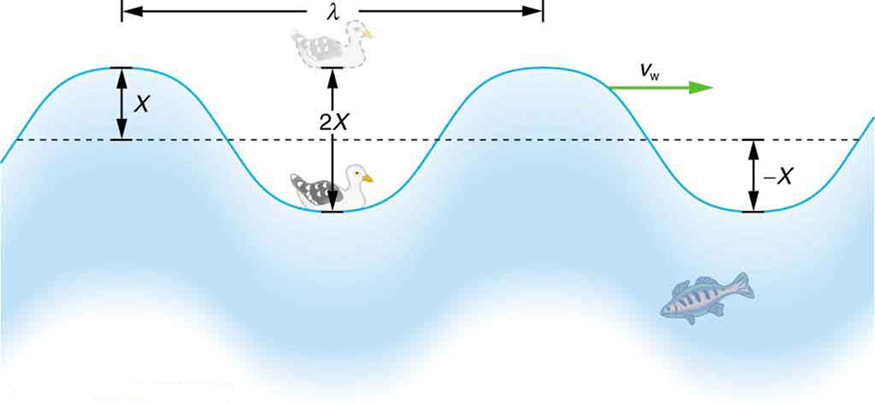
The water wave in Figure also has a length associated with it, called itswavelength\(\lambda\) the distance between adjacent identical parts of a wave. (\(\lambda\) is the distance parallel to the direction of propagation.) The speed of propagation \(v_w\) is the distance the wave travels in a given time, which is one wavelength in the time of one period. In equation form, that is
This fundamental relationship holds for all types of waves. For water waves, \(v_w\) is the speed of a surface wave; for sound, \(v_w\) is the speed of sound; and for visible light, \(v_w\) is the speed of light, for example.
TAKE-HOME EXPERIMENT: WAVES IN A BOWL
Fill a large bowl or basin with water and wait for the water to settle so there are no ripples. Gently drop a cork into the middle of the bowl. Estimate the wavelength and period of oscillation of the water wave that propagates away from the cork. Remove the cork from the bowl and wait for the water to settle again. Gently drop the cork at a height that is different from the first drop. Does the wavelength depend upon how high above the water the cork is dropped?
Calculate the wave velocity of the ocean wave in Figure if the distance between wave crests is 10.0 m and the time for a sea gull to bob up and down is 5.00 s.
We are asked to find \(v_w\). The given information tells us that \(\lambda = 10.0 \, m\) and \(T = 5.00 \, s\). Therefore, we can use Equation \ref{eq1} to find the wave velocity.
This slow speed seems reasonable for an ocean wave. Note that the wave moves to the right in the figure at this speed, not the varying speed at which the sea gull moves up and down.
A simple wave consists of a periodic disturbance that propagates from one place to another. The wave in Figure propagates in the horizontal direction while the surface is disturbed in the vertical direction. Such a wave is called atransverse waveor shear wave; in such a wave, the disturbance is perpendicular to the direction of propagation. In contrast, in alongitudinal waveor compressional wave, the disturbance is parallel to the direction of propagation. Figure shows an example of a longitudinal wave. The size of the disturbance is its amplitudeXand is completely independent of the speed of propagation \(v_w\).

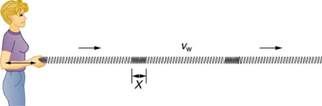
Waves may be transverse, longitudinal, ora combination of the two. (Water waves are actually a combination of transverse and longitudinal. The simplified water wave illustrated in Figure hows no longitudinal motion of the bird.) The waves on the strings of musical instruments are transverse—so are electromagnetic waves, such as visible light.
Sound waves in air and water are longitudinal. Their disturbances are periodic variations in pressure that are transmitted in fluids. Fluids do not have appreciable shear strength, and thus the sound waves in them must be longitudinal or compressional. Sound in solids can be both longitudinal and transverse.
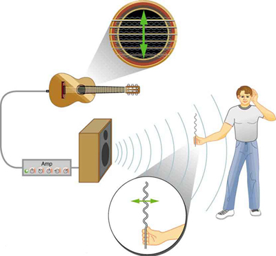
Earthquake waves under Earth’s surface also have both longitudinal and transverse components (called compressional or P-waves and shear or S-waves, respectively). These components have important individual characteristics—they propagate at different speeds, for example. Earthquakes also have surface waves that are similar to surface waves on water.
Exercise :Check Your Understanding
Why is it important to differentiate between longitudinal and transverse waves?
In the different types of waves, energy can propagate in a different direction relative to the motion of the wave. This is important to understand how different types of waves affect the materials around them.
PHET EXPLORATIONS: WAVE ON A STRING
Watch a string vibrate in slow motion with this PhET simulation. Wiggle the end of the string and make waves, or adjust the frequency and amplitude of an oscillator. Adjust the damping and tension. The end can be fixed, loose, or open.

📖 OpenStax College Physics, Section 16.9. openstax.org · CC BY 4.0
- Explain standing waves.
- Describe the mathematical representation of overtones and beat frequency.
Most waves do not look very simple. They look more like the waves in Figure than like the simple water wave considered inWaves. (Simple waves may be created by a simple harmonic oscillation, and thus have a sinusoidal shape). Complex waves are more interesting, even beautiful, but they look formidable. Most waves appear complex because they result from several simple waves adding together. Luckily, the rules for adding waves are quite simple.
When two or more waves arrive at the same point, they superimpose themselves on one another. More specifically, the disturbances of waves are superimposed when they come together—a phenomenon calledsuperposition. Each disturbance corresponds to a force, and forces add. If the disturbances are along the same line, then the resulting wave is a simple addition of the disturbances of the individual waves—that is, their amplitudes add. Figure and Figure illustrate superposition in two special cases, both of which produce simple results.
Figure shows two identical waves that arrive at the same point exactly in phase. The crests of the two waves are precisely aligned, as are the troughs. This superposition produces pureconstructive interference. Because the disturbances add, pure constructive interference produces a wave that has twice the amplitude of the individual waves, but has the same wavelength.
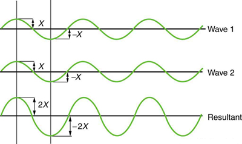
Figure shows two identical waves that arrive exactly out of phase—that is, precisely aligned crest to trough—producing puredestructive interference. Because the disturbances are in the opposite direction for this superposition, the resulting amplitude is zero for pure destructive interference—the waves completely cancel.
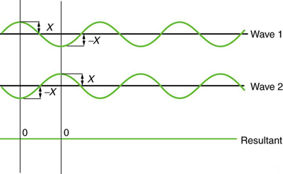
While pure constructive and pure destructive interference do occur, they require precisely aligned identical waves. The superposition of most waves produces a combination of constructive and destructive interference and can vary from place to place and time to time. Sound from a stereo, for example, can be loud in one spot and quiet in another. Varying loudness means the sound waves add partially constructively and partially destructively at different locations. A stereo has at least two speakers creating sound waves, and waves can reflect from walls. All these waves superimpose. An example of sounds that vary over time from constructive to destructive is found in the combined whine of airplane jets heard by a stationary passenger. The combined sound can fluctuate up and down in volume as the sound from the two engines varies in time from constructive to destructive. These examples are of waves that are similar.
An example of the superposition of two dissimilar waves is shown in Figure . Here again, the disturbances add and subtract, producing a more complicated looking wave.
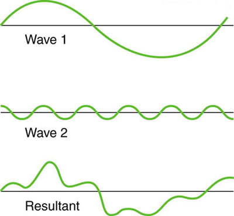
Sometimes waves do not seem to move; rather, they just vibrate in place. Unmoving waves can be seen on the surface of a glass of milk in a refrigerator, for example. Vibrations from the refrigerator motor create waves on the milk that oscillate up and down but do not seem to move across the surface. These waves are formed by the superposition of two or more moving waves, such as illustrated in Figure for two identical waves moving in opposite directions. The waves move through each other with their disturbances adding as they go by. If the two waves have the same amplitude and wavelength, then they alternate between constructive and destructive interference. The resultant looks like a wave standing in place and, thus, is called astanding wave. Waves on the glass of milk are one example of standing waves. There are other standing waves, such as on guitar strings and in organ pipes. With the glass of milk, the two waves that produce standing waves may come from reflections from the side of the glass.
A closer look at earthquakes provides evidence for conditions appropriate for resonance, standing waves, and constructive and destructive interference. A building may be vibrated for several seconds with a driving frequency matching that of the natural frequency of vibration of the building—producing a resonance resulting in one building collapsing while neighboring buildings do not. Often buildings of a certain height are devastated while other taller buildings remain intact. The building height matches the condition for setting up a standing wave for that particular height. As the earthquake waves travel along the surface of Earth and reflect off denser rocks, constructive interference occurs at certain points. Often areas closer to the epicenter are not damaged while areas farther away are damaged.
![Standing wave combinations of two waves is shown. At the time t is equal to zero. The waves are in the same phase so the amplitude of the superimposed wave is double that of wave one and two. In the second figure at time t is equal to one fourth of time period T , the waves are in opposite phase so their super imposed figure is a straight line. Again at the time t is equal to half the time period the waves are in the same phase and the process is repeated at t is equal to three fourth of time period and at the end of the time period T.](images/ch16/fig16-38-standing-wave-combinations-of-two-waves-.jpg)
Standing waves are also found on the strings of musical instruments and are due to reflections of waves from the ends of the string. Figure and Figure show three standing waves that can be created on a string that is fixed at both ends.Nodesare the points where the string does not move; more generally, nodes are where the wave disturbance is zero in a standing wave. The fixed ends of strings must be nodes, too, because the string cannot move there. The wordantinodeis used to denote the location of maximum amplitude in standing waves. Standing waves on strings have a frequency that is related to the propagation speed \(v_w\) of the disturbance on the string. The wavelength \(\lambda\) is determined by the distance between the points where the string is fixed in place.
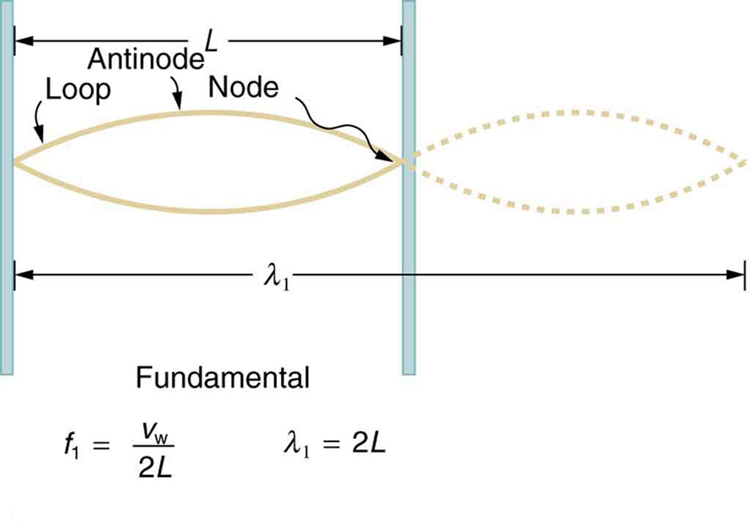
The lowest frequency, called thefundamental frequency, is thus for the longest wavelength, which is seen to be \(\lambda_1 = 2L\). Therefore, the fundamental frequency is \(f_1 = v_w/\lambda_1 = v_w/2L\). In this case, theovertonesor harmonics are multiples of the fundamental frequency. As seen in Figure , the first harmonic can easily be calculated since \(\lambda_2 = L\). Thus, \(f_2 = v_w/\lambda_2 = v_w/2L = 2f_1\). Similarly, \(f_3 = 3f_1\), and so on. All of these frequencies can be changed by adjusting the tension in the string. The greater the tension, the greater \(v_w\) is and the higher the frequencies. This observation is familiar to anyone who has ever observed a string instrument being tuned. We will see in later chapters that standing waves are crucial to many resonance phenomena, such as in sounding boxes on string instruments.
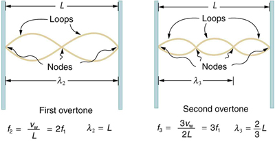
Striking two adjacent keys on a piano produces a warbling combination usually considered to be unpleasant. The superposition of two waves of similar but not identical frequencies is the culprit. Another example is often noticeable in jet aircraft, particularly the two-engine variety, while taxiing. The combined sound of the engines goes up and down in loudness. This varying loudness happens because the sound waves have similar but not identical frequencies. The discordant warbling of the piano and the fluctuating loudness of the jet engine noise are both due to alternately constructive and destructive interference as the two waves go in and out of phase. Figure illustrates this graphically.
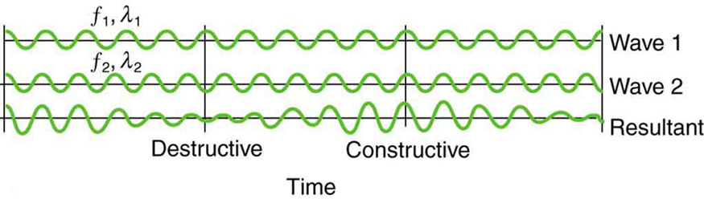
The wave resulting from the superposition of two similar-frequency waves has a frequency that is the average of the two. This wave fluctuates in amplitude, orbeats, with a frequency called thebeat frequency. We can determine the beat frequency by adding two waves together mathematically. Note that a wave can be represented at one point in space as
where \(f = 1/T\) is the frequency of the wave. Adding two waves that have different frequencies but identical amplitudes produces a resultant
Using a trigonometric identity, it can be shown that
is the beat frequency, and \(f_{ave}\) is the average of \(f_1\) and \(f_2\). These results mean that the resultant wave has twice the amplitude and the average frequency of the two superimposed waves, but it also fluctuates in overall amplitude at the beat frequency \(f_B\). The first cosine term in the expression effectively causes the amplitude to go up and down. The second cosine term is the wave with frequency \(f_{ave}\). This result is valid for all types of waves. However, if it is a sound wave, providing the two frequencies are similar, then what we hear is an average frequency that gets louder and softer (or warbles) at the beat frequency.
MAKING CAREER CONNECTIONS
Piano tuners use beats routinely in their work. When comparing a note with a tuning fork, they listen for beats and adjust the string until the beats go away (to zero frequency). For example, if the tuning fork has a \(256 hZ\) frequency and two beats per second are heard, then the other frequency is either \(254\) or \(258 \, Hz\). Most keys hit multiple strings, and these strings are actually adjusted until they have nearly the same frequency and give a slow beat for richness. Twelve-string guitars and mandolins are also tuned using beats.
While beats may sometimes be annoying in audible sounds, we will find that beats have many applications. Observing beats is a very useful way to compare similar frequencies. There are applications of beats as apparently disparate as in ultrasonic imaging and radar speed traps.
Exercise
Imagine you are holding one end of a jump rope, and your friend holds the other. If your friend holds her end still, you can move your end up and down, creating a transverse wave. If your friend then begins to move her end up and down, generating a wave in the opposite direction, what resultant wave forms would you expect to see in the jump rope?
The rope would alternate between having waves with amplitudes two times the original amplitude and reaching equilibrium with no amplitude at all. The wavelengths will result in both constructive and destructive interference.
Exercise
Add text here. For the automatic number to work, you need to add the "AutoNum" template (preferably at the end) to the page.
Nodes are areas of wave interference where there is no motion. Antinodes are areas of wave interference where the motion is at its maximum point.
Exercise
You hook up a stereo system. When you test the system, you notice that in one corner of the room, the sounds seem dull. In another area, the sounds seem excessively loud. Describe how the sound moving about the room could result in these effects.
With multiple speakers putting out sounds into the room, and these sounds bouncing off walls, there is bound to be some wave interference. In the dull areas, the interference is probably mostly destructive. In the louder areas, the interference is probably mostly constructive.
PHET EXPLORATIONS: WAVE INTERFERENCE
Make waves with a dripping faucet, audio speaker, or laser! Add a second source or a pair of slits to create an interference pattern.

📖 OpenStax College Physics, Section 16.10. openstax.org · CC BY 4.0
- Calculate the intensity and the power of rays and waves.
All waves carry energy. The energy of some waves can be directly observed. Earthquakes can shake whole cities to the ground, performing the work of thousands of wrecking balls. Loud sounds pulverize nerve cells in the inner ear, causing permanent hearing loss. Ultrasound is used for deep-heat treatment of muscle strains. A laser beam can burn away a malignancy. Water waves chew up beaches.
The amount of energy in a wave is related to its amplitude. Large-amplitude earthquakes produce large ground displacements. Loud sounds have higher pressure amplitudes and come from larger-amplitude source vibrations than soft sounds. Large ocean breakers churn up the shore more than small ones. More quantitatively, a wave is a displacement that is resisted by a restoring force. The larger the displacement \(x\) the larger the force \(F = kx\) needed to create it. Because work \(W\) is related to force multiplied by distance (\(F_x\)) and energy is put into the wave by the work done to create it, the energy in a wave is related to amplitude. In fact, a wave’s energy is directly proportional to its amplitude squared because
The energy effects of a wave depend on time as well as amplitude. For example, the longer deep-heat ultrasound is applied, the more energy it transfers. Waves can also be concentrated or spread out. Sunlight, for example, can be focused to burn wood. Earthquakes spread out, so they do less damage the farther they get from the source. In both cases, changing the area the waves cover has important effects. All these pertinent factors are included in the definition ofintensity\(I\) as power per unit area:
where \(P\) is the power carried by the wave through area \(A\). The definition of intensity is valid for any energy in transit, including that carried by waves. The SI unit for intensity is watts per square meter \((W/m^2)\). For example, infrared and visible energy from the Sun impinge on Earth at an intensity of \(1300 \, W/m^2\) just above the atmosphere. There are other intensity-related units in use, too. The most common is the decibel. For example, a 90 decibel sound level corresponds to an intensity of \(10^{-3} \, W/m^2\) (This quantity is not much power per unit area considering that 90 decibels is a relatively high sound level. Decibels will be discussed in some detail in a later chapter.
The average intensity of sunlight on Earth’s surface is about \(700 \, W/m^2\).
Because power is energy per unit time or \(P = \frac{E}{t}\), the definition of intensity can be written as \(I = \frac{P}{A} = \frac{E/t}{A}\), and this equation can be solved for E with the given information.
The energy falling on the solar collector in 4 h in part is enough to be useful—for example, for heating a significant amount of water.
Taking a ratio of new intensity to old intensity and using primes for the new quantities, we will find that it depends on the ratio of the areas. All other quantities will cancel.
Decreasing the area increases the intensity considerably. The intensity of the concentrated sunlight could even start a fire.
If two identical waves, each having an intensity of \(1.00 \, W/m^2\),
interfere perfectly constructively, what is the intensity of the resulting wave?
We know fromSuperposition and Interferencethat when two identical waves, which have equal amplitudes \(X\) interfere perfectly constructively, the resulting wave has an amplitude of \(2X\). Because a wave’s intensity is proportional to amplitude squared, the intensity of the resulting wave is four times as great as in the individual waves.
The intensity goes up by a factor of 4 when the amplitude doubles. This answer is a little disquieting. The two individual waves each have intensities of \(1.00 \, W/m^2\), yet their sum has an intensity of \(4.00 \, W/m^2\), which may appear to violate conservation of energy. This violation, of course, cannot happen. What does happen is intriguing. The area over which the intensity is \(4.00 \, W/m^2\) is much less than the area covered by the two waves before they interfered. There are other areas where the intensity is zero. The addition of waves is not as simple as our first look inSuperposition and Interferencesuggested. We actually get a pattern of both constructive interference and destructive interference whenever two waves are added. For example, if we have two stereo speakers putting out \(1.00 \, W/m^2\) each, there will be places in the room where the intensity is \(4.00 \, W/m^2\), other places where the intensity is zero, and others in between. Figure shows what this interference might look like. We will pursue interference patterns elsewhere in this text.
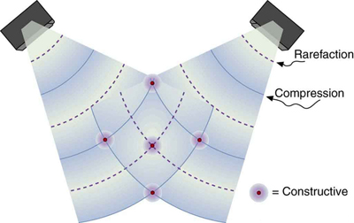
Exercise
Which measurement of a wave is most important when determining the wave's intensity?
Amplitude, because a wave’s energy is directly proportional to its amplitude squared.
📖 OpenStax College Physics, Section 16.11. openstax.org · CC BY 4.0
| Section | Title |
|---|---|
| 16.1 | 16.1: Hooke’s Law - Stress and Strain Revisited |
| 16.2 | 16.2: Period and Frequency in Oscillations |
| 16.3 | 16.3: Simple Harmonic Motion- A Special Periodic Motion |
| 16.4 | 16.4: The Simple Pendulum |
| 16.5 | 16.5: Energy and the Simple Harmonic Oscillator |
| 16.6 | 16.6: Uniform Circular Motion and Simple Harmonic Motion |
| 16.7 | 16.7: Damped Harmonic Motion |
| 16.8 | 16.8: Forced Oscillations and Resonance |
| 16.9 | 16.9: Waves |
| 16.10 | 16.10: Superposition and Interference |
| 16.11 | 16.11: Energy in Waves- Intensity |